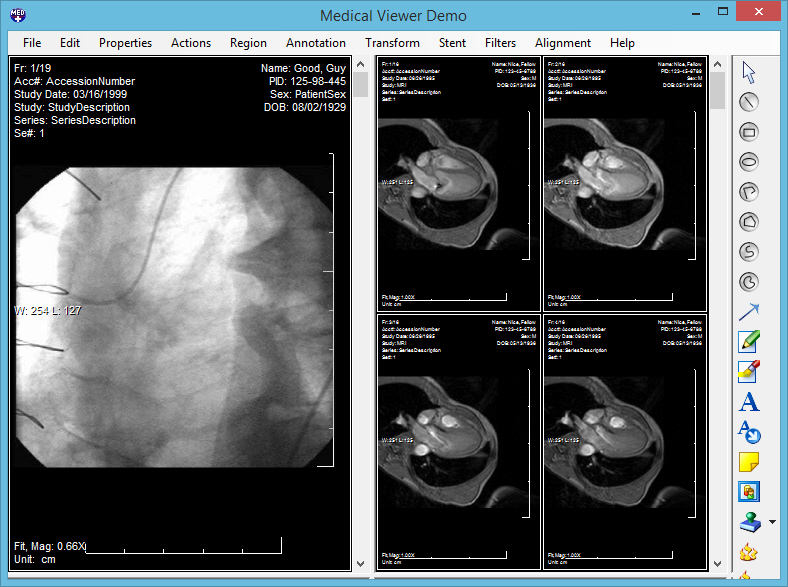

|
Medical Viewer Demo
Demonstrates the DICOM/Medical image display functionality.
- Load datasets from DICOM and DICOM Directory
- Display images with full control over the cell/sub-cell layout
- Interactive actions: WindowLevel, Pan, Zoom, Magnify Glass
- Create, edit, and view image annotations
- Advanced animation playback
|
 |